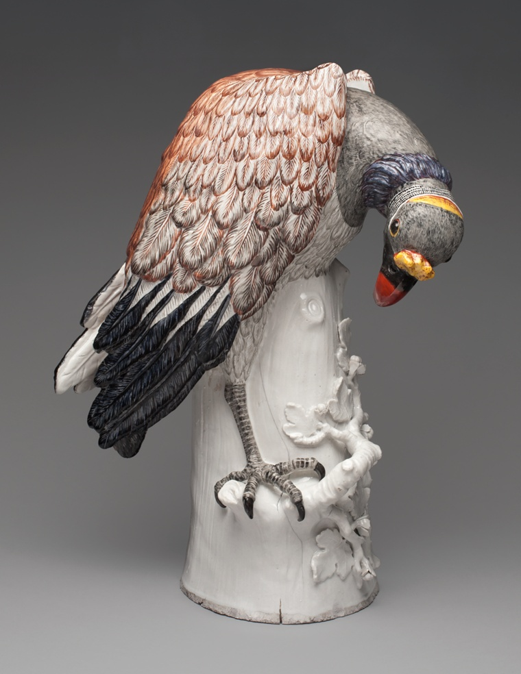
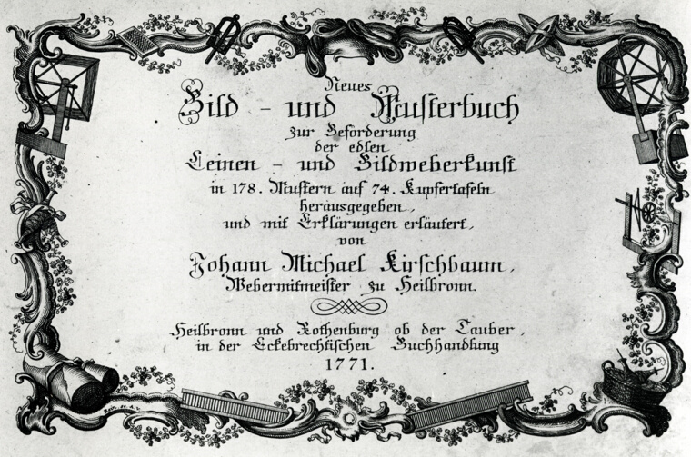
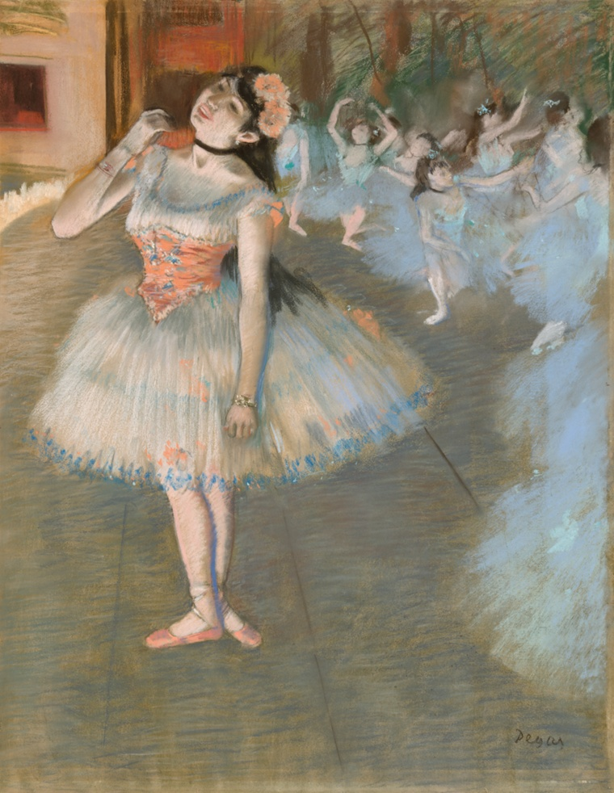

issue no. 1 · a riso zine · made at 2am · staple here →
winds, moons, a 13-ton bell, somebody's cabbage. naming is a kind of love and i can prove it.
two inks only · red + blueok here's the whole thesis: every time a person points at a thing and gives it a name, they're saying i noticed you. you mattered enough to keep. a wind. a moon. a stranger's bell. that's love with extra steps.
(i printed this twice on purpose, the registration's off, leave it)
a warm wind off the mountains of alberta and BC. it carries the name of the Chinook people of the lower Columbia River — a word that traveled inland with fur traders until it meant something wild and warming.
“The term ‘Chinook’ originates from the Chinook people… French-speaking fur traders later brought the term inland to Alberta, where it became applied to föhn winds.”
the wind remembers where it came from.
Chinook people of the lower Columbia River · Wikipedia — Chinook Wind
ok but it gets better. the same wind has a love story attached. i can't.
“Native legend of the Lil'wat subgroup of the St'at'imc tells of a girl named Chinook-Wind, who married Chinook Glacier, and moved to his country.”
St'at'imc and Lil'wat First Nations (British Columbia) · Wikipedia
a wind that married a glacier. somebody loved the weather THIS much.
“January — Wolf Moon: also Old Moon, Snow Moon (in some tribes), Moon After Yule.”
same cold moon, and every people who looked up named it for what was happening to them — wolves in the dark, the long-gone year, the snow. that's a diary written on the sky.
Farmers Almanac / Algonquian peoples of the Northeastern Woodlands · farmersalmanac.com
the 13-ton bell wasn't named for its size. it was named for a guy doing his job — the Welsh engineer Sir Benjamin Hall — and the name just… stuck. forever.
“it is proposed to call our king of bells ‘Big Ben’ in honour of Sir Benjamin Hall… during whose tenure of office it was cast.”
imagine being so good at your job they hand you a bell to be remembered by
The Times of London, Oct 22 1856 · History.com
A Scandal in Bohemia — the opening line
To Sherlock Holmes she is always the woman.
not by her name. by her singular weight. one sentence and you understand everything that matters about her, before you know a single fact.
naming someone “the” — the whole category, just her. devastating.
Arthur Conan Doyle · The Adventures of Sherlock Holmes · gutenberg.org
lit. “my cabbage” — a term of endearment
not a rose. not a star. a cabbage. and somehow it's the most loving thing in this whole zine — because it's so unglamorous it has to be real.
“A monk asked Zhaozhou, ‘Has a dog Buddha-nature or not?’ Zhaozhou answered, ‘Wú.’”
the opposite move. somebody asked for a yes-or-no name and got ‘mu’ — not no, not yes, the answer that refuses the question. naming and un-naming, same coin.
Zhaozhou Congshen (778–897), compiled by Wumen Huikai · The Gateless Barrier · Wikipedia
(a museum is just a building full of stuff humans refused to let disappear. naming, again.)

somebody looked at a vulture — a vulture — and decided it needed to be made of porcelain and live forever. i call it the Porcelain Sentinel. they didn't name it that. but somebody loved it that much.
and this is just an 18th-century pattern book showing off — swirling baroque borders that look like they might dissolve into curling smoke. the whole flex is “trust me, i know patterns.”


Degas named this one The Star. neck stretched back, one arm reaching up like she's grabbing the air itself — and everyone else around her dissolves into haze. we named the reaching, not the dancer. (i found this at 2am and just sat there.)
To tell the Beauty would decrease To state the Spell demean -- There is a syllable-less Sea Of which it is the sign -- My will endeavors for its word And fails, but entertains A Rapture as of Legacies -- Of introspective Mines --
— Emily Dickinson · PoetryDB
and here's the catch dickinson saw 150 years ago: some things get smaller when you say them out loud. naming is love AND a small loss at the same time. she tries anyway fails, but entertains. that line broke me open.